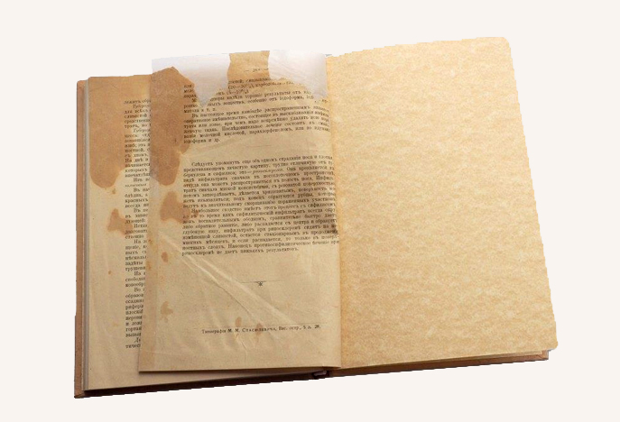
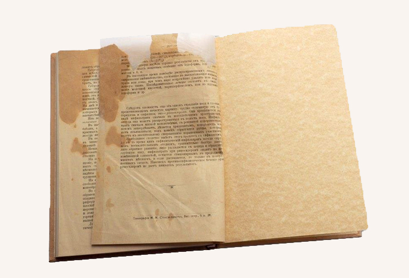

Реставрация старой книги
Сохранение жизни старых книг – дело очень важное и трудоемкое. Ведь именно такие книги зачастую бывают особенно дороги сердцу – с ними связаны приятные воспоминания. За свою долгую жизнь издания по тем или иным причинам могут прийти в негодность – в этом случае вам понадобится реставрация книг.